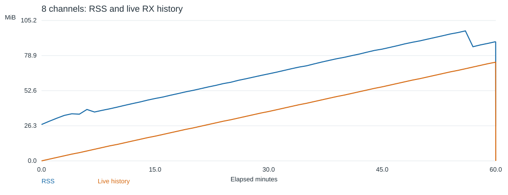
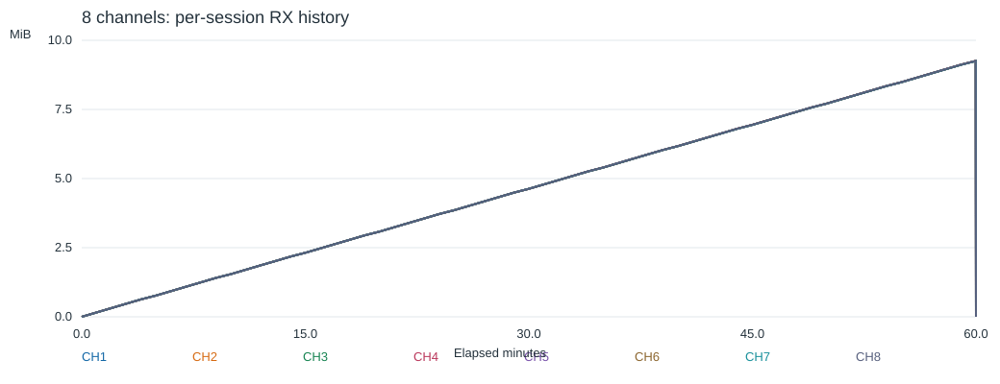
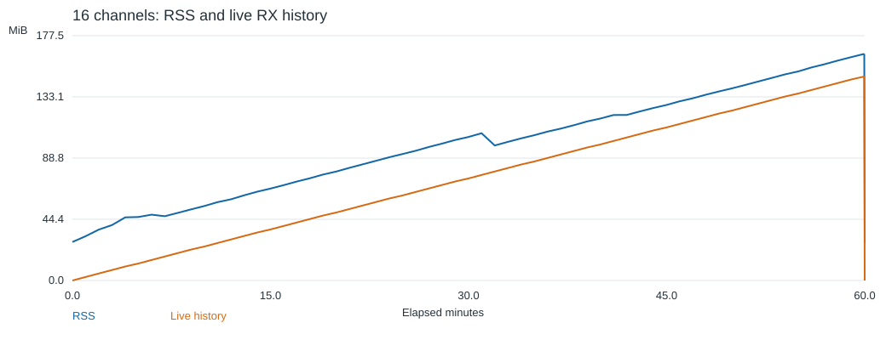
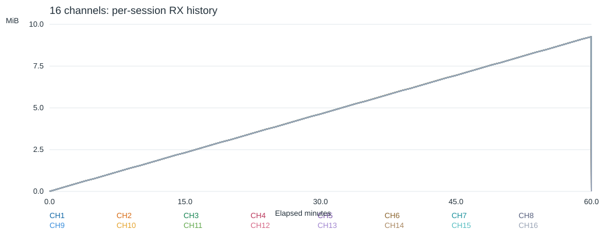

2026-11-15 · CPython 3.9.10 · 模拟串口与隔离进程；未连接真实 DUT、真实模型，未修改接收、写盘、编码、刷新或原业务 PASS/FAIL。
重要：接收原始字节、内存历史、带时间戳文本文件的大小不是同一个指标。ASCII 文本序号/内容校验通过不代表原始字节归档保真通过。input/*.rx.bin 是测试输入基准，不是程序新增的原始归档功能。
固定的可重现 OpenWrt 风格 ASCII 消息，10条/秒持续、100条/秒突发2秒/分钟、每5分钟空闲10秒；通道分相，部分CRLF跨读取块。每条含通道与序列号。使用当前 PySerialSession 和实际文件写入，无硬件；未在一小时主体关闭/重开会话。该负载尚未用现场设备数据校准。
输入文件/驱动读取/内存分别按字节和SHA256对照；磁盘文本剥除程序时间戳与RX方向后，核对序列、条数和内容SHA256，并明确仅归一化CRLF。结束先停生产、排空驱动，再正常关闭并检查弱引用及线程。RSS不会因Python分配器而被要求立即回到启动值。60秒采样峰值不是连续观测峰值。
文本与资源收尾检查：True；字节保真验收：未通过/本格式不支持。样本 63 个，60 秒采样。
RSS 起始/采样峰值/释放后：27.27 / 97.44 / 25.88 MiB。历史 73.97 MiB。历史增长 73.97 MiB/h；RSS 线性拟合增长 67.45 MiB/h。


OLS 使用第5分钟之后的存活阶段样本；排除释放阶段。估算只适用于本次合成负载，不考虑后续内存不足、交换、输出速率变化或磁盘耗尽。
| 通道 | 驱动实际接收 bytes | 内存历史 bytes | 磁盘文本 bytes | 记录数 | 缺失 | 重复/乱序 | 文本SHA256一致 |
|---|---|---|---|---|---|---|---|
| 1 | 9694560 | 9694560 | 10743446 | 45600 | 0 | 0 | True |
| 2 | 9694560 | 9694560 | 10743446 | 45600 | 0 | 0 | True |
| 3 | 9694560 | 9694560 | 10743446 | 45600 | 0 | 0 | True |
| 4 | 9700085 | 9700085 | 10749592 | 45627 | 0 | 0 | True |
| 5 | 9696254 | 9696254 | 10745347 | 45609 | 0 | 0 | True |
| 6 | 9694560 | 9694560 | 10743446 | 45600 | 0 | 0 | True |
| 7 | 9690446 | 9690446 | 10738918 | 45582 | 0 | 0 | True |
| 8 | 9694560 | 9694560 | 10743446 | 45600 | 0 | 0 | True |
文本与资源收尾检查：True；字节保真验收：未通过/本格式不支持。样本 63 个，60 秒采样。
RSS 起始/采样峰值/释放后：27.94 / 164.36 / 26.95 MiB。历史 147.93 MiB。历史增长 147.92 MiB/h；RSS 线性拟合增长 126.42 MiB/h。


OLS 使用第5分钟之后的存活阶段样本；排除释放阶段。估算只适用于本次合成负载，不考虑后续内存不足、交换、输出速率变化或磁盘耗尽。
| 通道 | 驱动实际接收 bytes | 内存历史 bytes | 磁盘文本 bytes | 记录数 | 缺失 | 重复/乱序 | 文本SHA256一致 |
|---|---|---|---|---|---|---|---|
| 1 | 9694560 | 9694560 | 10743446 | 45600 | 0 | 0 | True |
| 2 | 9694560 | 9694560 | 10743446 | 45600 | 0 | 0 | True |
| 3 | 9694560 | 9694560 | 10743446 | 45600 | 0 | 0 | True |
| 4 | 9694560 | 9694560 | 10743446 | 45600 | 0 | 0 | True |
| 5 | 9692428 | 9692428 | 10741107 | 45591 | 0 | 0 | True |
| 6 | 9694560 | 9694560 | 10743446 | 45600 | 0 | 0 | True |
| 7 | 9693969 | 9693969 | 10742809 | 45598 | 0 | 0 | True |
| 8 | 9694560 | 9694560 | 10743446 | 45600 | 0 | 0 | True |
| 9 | 9694560 | 9694560 | 10743446 | 45600 | 0 | 0 | True |
| 10 | 9697895 | 9697895 | 10747172 | 45617 | 0 | 0 | True |
| 11 | 9694560 | 9694560 | 10743446 | 45600 | 0 | 0 | True |
| 12 | 9694560 | 9694560 | 10743446 | 45600 | 0 | 0 | True |
| 13 | 9694560 | 9694560 | 10743446 | 45600 | 0 | 0 | True |
| 14 | 9694560 | 9694560 | 10743446 | 45600 | 0 | 0 | True |
| 15 | 9694560 | 9694560 | 10743446 | 45600 | 0 | 0 | True |
| 16 | 9694560 | 9694560 | 10743446 | 45600 | 0 | 0 | True |
周期快照不是原子事务：驱动计数与各会话内存/文件采样有时差，期间的微小差额不能作为丢失判据；最终比较在停产、排空、关闭后进行。繁忙导致的未采到值保留空白并排除拟合，不当作零。各通道增长率见summary.json。
模拟驱动不执行波特率节流，100条/秒突发可能超过115200波特率实际线速，用于软件侧峰值压力；连续/空闲及日志类型接近常见OpenWrt形态，但未用现场DUT校准。72/168小时估算只代表此合成负载。
{
"utf8_split": {
"input_bytes": 8,
"original_text_preserved": false,
"replacement_present": true,
"byte_fidelity_passed": false
},
"no_newline": {
"offered_to_line_writer_bytes": 1048576,
"pending_chars": 1048576,
"written_chars_before_close": 0,
"note": "Line-writer-only probe; no physical driver. Tail remains in RAM until a flush boundary.",
"written_chars_after_explicit_tail_flush": 1048600
},
"serial_disk_failure": {
"escaped_reader_loop_exception": [
"OSError"
],
"reader_stopped": true,
"history_bytes": 7,
"receive_error_recorded": false,
"observed_write_status": "reader_stopped_unexpectedly",
"exact_writer_error_available_to_monitor": false,
"note": "Read-only monitor detects stopped acquisition; it does not repair the original writer or recover the lost line."
},
"telnet_disk_failure": {
"writer_error_escaped_emit": false,
"existing_error_suppressed": true,
"note": "No socket created. Exact suppressed writer error cannot be obtained by read-only sampling."
}
}串口写错会退出读线程；只读监测可以发现停止/文件异常，但无法还原被吞掉的Telnet错误、确认最后一次flush或追回未保存数据。无换行片段仍占用独立内存。后续优先完善原始归档和可靠告警，再设计有界历史。
A1/A2复现及相关自动化见 旧版复现、相关回归日志。本机通用命令/写入保守拦截可能阻止无害命令；只读文件、证据检索、被动串口与材料分析保留，不未经确认放宽。
A2不能消除远端在发送检查之后瞬间重启的物理竞态；首次出现未识别提示会保守停止，厂商兼容须现场复验。不自动重发未知结果，清理失败仍保留恢复记录。
下一轮：先设计完整二进制RX追加归档、文本兼容视图、索引、写错/磁盘不足告警及恢复策略；再评估绝对游标、活动等待窗口和磁盘补读兼容的有界缓冲。未经负责人确认不改权限或凭据策略，不在本轮执行72小时测试。
39 new tests and 60 shutdown checks passed. The original 777-test related run passed. After concurrent UI changes, the current 785-test combination has 2 toolbar-order subtest failures and is NOT all-passed.
Chinese conclusions | Files, changes and rollback | Version boundaries | Current 785-test log | Current 39 tests | 60 shutdown checks